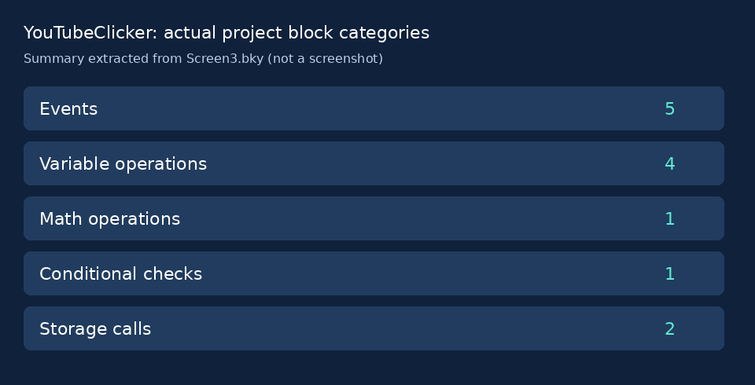

My projects
These are three examples of my university coursework and personal programming work.
01 — Hash Table Login System
CData structuresUniversity courseworkDescription: For my Multi-Paradigm Programming assignment, I worked on a simple login system using a hash table. The program stores users, looks up their details, checks passwords and loads records from a file.
My contribution: We were given starter code and I completed the functions needed to initialise the table, register and find users, check passwords, manage linked lists and free memory.
What I learned: This helped me understand pointers, hash tables, memory management and how to solve programming problems step by step. My grade is still pending.
Improvement: This educational program uses plain-text passwords; a real system would need secure password hashing.
Download my C implementation · Starter header file
02 — YouTubeClicker Android Game
MIT App InventorAndroidBlock-based programmingDescription: I created a basic Android clicker game where each click earns one point. Users can reset their current score and try to beat their high score. When the app closes and opens again, the high score remains saved while the current score starts at zero.
My contribution: I built the app using MIT App Inventor, including the scoring system, reset controls, saved high score and screen navigation.
What I learned: I developed my understanding of events, variables, conditions and how an app can remember information between sessions.

Visual summary extracted from the original project file; not a screenshot of the app.
Download App Inventor source (.aia) · Download Android app (.apk)
03 — Estate Agent Property Coursework
C#.NET 8JSONDescription: I worked on a Programming Foundations assignment involving a C# estate agent project with house information stored in JSON. The assignment was based on property information and included work with a C#/.NET project and JSON data. This connects to my interest in software used in real estate businesses.
My contribution: I submitted this project as part of my coursework. I received feedback confirming that I passed and met the assignment requirements.
What I learned: I gained experience working with C# project files, understanding data structures and working with JSON data.
Evidence note: The uploaded project archive still contains some placeholder functions. This description does not claim those functions were implemented in the supplied files.
Download coursework archive
Role I am working towards
AI Engineer — TurleyWay Limited (advertised on Totaljobs). I chose this advert because it combines software engineering, AI, automation and real estate data. I am currently developing the foundation skills for this type of work rather than claiming to meet the experienced-role requirements.
Relevant experience: C#/.NET and JSON in my estate agent coursework; data structures and memory management in C; app logic and saved data in YouTubeClicker.
Skills I still need to develop: production AI systems, Python, APIs, cloud services, RAG, agentic workflows, semantic data layers and AI governance.
View original TurleyWay AI Engineer advert on Totaljobs · Download offline advert copy (PDF)
Note: The offline copy reproduces the job description provided for this portfolio, not a verified snapshot of the Totaljobs page.